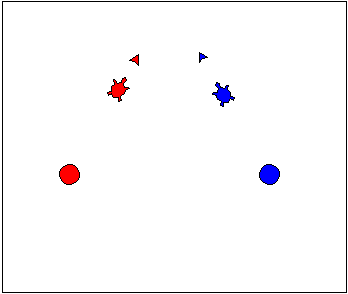
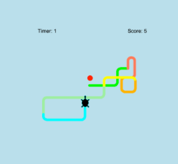

This is my Portfolio Page!

The first project, The Wacky Triangle.
We created a program that made objects move in a pattern infinitely. First we imported the turtle and math to begin. After that we created two empty lists for the sets of shape objects that we were going to use, those being “left_shapes” and “right_shapes”. Then we made lists for the shapes and colors of the objects that we used to initialize our objects. We then added the shapes into the picture, colorized them, and moved them into their starting positions, with the objects in “left_shapes” being facing the same direction and the objects in “right_shapes” facing another direction. The shapes then moved forward and we established a condition for what happens after the first collision. We then set up the first collision. After the shapes collided for the first time, they changed color and shape and moved in the opposite direction. We stored the original colors and shapes of the objects in variables so that we could revert them to their original conditions after the second collision. Because the objects followed a triangular path, they switched directions again and began to move toward each other after moving a predetermined distance after the first collision. When the objects collide for a second time, they go back to their original position repeat the same pattern in an infinite loop.
Creating a game where a turtle eats apples.
We first import the turtle and the random module. After that is complete, we establish the screen’s background color and our pensive and pen color, along with the turtle shape and its initial size. We then establish what constitutes an apple in our game, making it a red circle. We also add in a color list. Then we move onto making the scoring system, starting it at 0 and establishing the score’s location on the screen in the upper right corner. Next, we set up a timer which runs for a total of 15 seconds and appears in the upper left corner. After we establish that, we create the process that enables the apple to randomly appear on the map after the collision with the turtle, as well as how much the turtle grows after eating it (0.2). Past that, we enable the turtle’s trail to change color and the game to end once the timer runs out. Finally, we established the arrow key movements that allow the turtle to be moved in the first place.